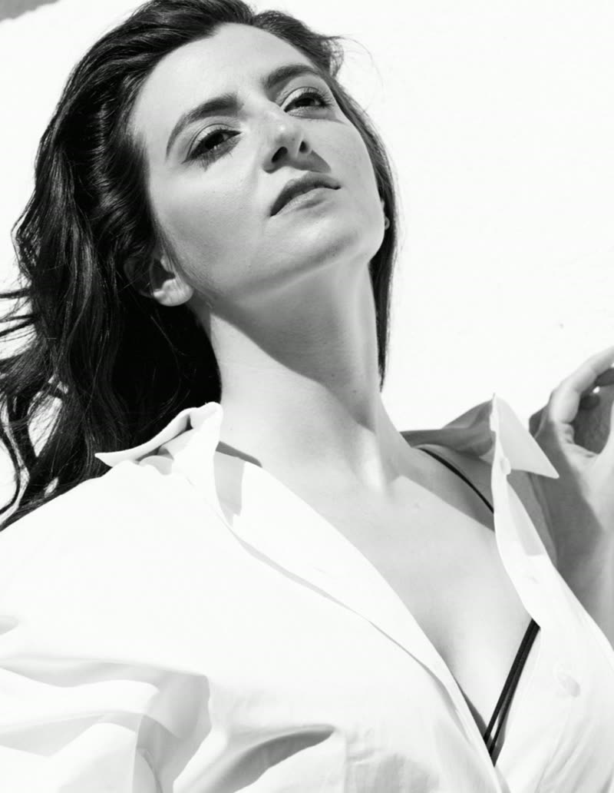

Carmen Tur
Hay dos líneas de trabajo: Neutras y de personalidad.
Las fotografías «neutras» tienen el objetivo de mostrar cómo es la actriz. Las fotografías de «personalidad» están enfocadas a mostrar diferentes roles, perfiles, energías, etc., que la actriz puede dar.